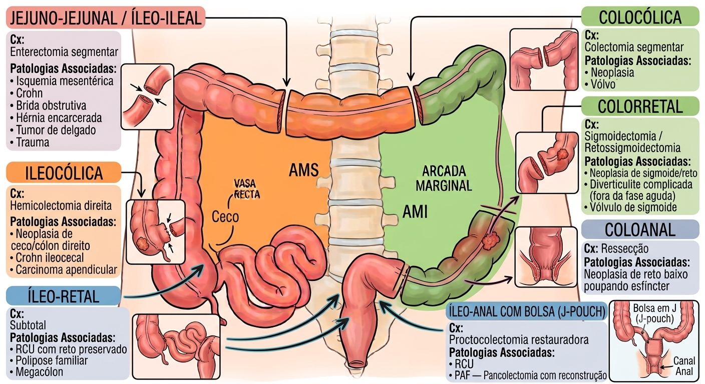

Territórios vasculares: AMS × AMI
Todo o raciocínio de "até onde posso ressecar" começa em saber de onde vem o sangue de cada segmento. O intestino é irrigado por dois eixos principais que se comunicam entre si.
| Eixo | Território | Ramos principais |
|---|---|---|
| AMS (mesentérica superior) | Treitz → jejuno → íleo → ceco → cólon ascendente → 2/3 proximais do transverso | Jejunais, ileais, ileocólica, cólica direita (inconstante), cólica média |
| AMI (mesentérica inferior) | 1/3 distal do transverso → descendente → sigmoide → reto superior | Cólica esquerda, sigmoideas, retal superior |
| Ilíaca interna | Reto médio e inferior | Retais média e inferior — por isso o reto baixo sobrevive mesmo após ligadura da AMI na origem |
(a arcada marginal é a "estrada secundária" que corre junto ao intestino; o arco de Riolan é um "atalho" mais central que só vira protagonista quando a estrada principal está bloqueada — estenose de AMS, ligadura de AMI)
Como decidir até onde ressecar
Avaliação de viabilidade (o "check" na hora da cirurgia)
- Cor da alça — rosada e viva vs. cianótica/enegrecida.
- Peristalse presente.
- Sangramento pulsátil nas bordas de secção — o clássico "sangra bem, tá viável".
- Textura/temperatura da serosa.
- Doppler intraoperatório se dúvida na borda de ressecção.
Margem oncológica × margem em doença benigna
Em neoplasia, você não resseca só o que está isquêmico — resseca a margem longitudinal + o território linfonodal correspondente, o que implica ligadura vascular na origem ("high tie"). Em doença benigna (Crohn, isquemia focal), o princípio é o oposto: poupar intestino, ligando o mesentério próximo à alça.
Estruturas nobres — o que NUNCA pode ser lesado
| Estrutura | Momento de risco |
|---|---|
| Ureteres (bilateral) | Mobilização do cólon esquerdo/sigmoide — o ureter esquerdo cruza os vasos ilíacos perto da bifurcação |
| Duodeno (D2/D3) | Manobra de Kocher, mobilização do ângulo hepático |
| Baço | Mobilização do ângulo esplênico — lesão capsular é causa clássica de esplenectomia "acidental" |
| Vasos gonadais | Dissecção retroperitoneal, ressecções pélvicas |
| Plexo hipogástrico / nervos autonômicos pélvicos | Dissecção do reto — lesão causa disfunção urinária/sexual |
| Vasos ilíacos, aorta, cava | Dissecção retroperitoneal profunda |
| Pâncreas | A AMS passa por trás do colo pancreático — cuidado na ligadura alta oncológica |
Anastomose primária × desvio de trânsito
| Favorece anastomose primária | Favorece estoma/desvio |
|---|---|
| Perfusão adequada nas bordas | Peritonite fecal / contaminação grosseira |
| Sem peritonite | Choque, instabilidade hemodinâmica |
| Estável, sem vasopressor | Uso de droga vasoativa |
| Sem desnutrição grave | Desnutrição grave, imunossupressão |
| Anastomose sem tensão | Edema importante de alças |
| Cirurgia eletiva | Damage control / urgência com múltiplas comorbidades |
Anastomoses mais comuns e suas patologias típicas
| Anastomose | Cirurgia | Patologias associadas |
|---|---|---|
| Jejuno-jejunal / íleo-ileal | Enterectomia segmentar | Isquemia mesentérica, Crohn, brida obstrutiva, hérnia encarcerada, tumor de delgado, trauma |
| Ileocólica | Hemicolectomia direita | Neoplasia de ceco/cólon direito, Crohn ileocecal, carcinoide apendicular |
| Colocólica | Colectomia segmentar | Neoplasia, vólvulo |
| Colorretal | Sigmoidectomia / retossigmoidectomia | Neoplasia de sigmoide/reto, diverticulite complicada (fora da fase aguda), vólvulo de sigmoide |
| Coloanal | Ressecção interesfincteriana | Neoplasia de reto baixo poupando esfíncter |
| Íleo-retal | Colectomia subtotal | RCU com reto preservado, polipose familiar, megacólon |
| Íleo-anal com bolsa (J-pouch) | Proctocolectomia restauradora | RCU, PAF — pancolectomia com reconstrução |

Instrumentação — mão D × mão E
Regra geral: mão direita = mão ativa (corta, dissecca, grampeia, sutura); mão esquerda = exposição e contratração. (uma mão trabalha, a outra segura e estica o tecido pra a primeira enxergar)
- Porta-agulha / agulha
- Tesoura de Metzenbaum
- Bisturi / energia (LigaSure, Harmonic)
- Grampeador GIA/TA
- Mixter (dissecção do pedículo)
- Pinça DeBakey (atraumática)
- Babcock (preensão de alça)
- Allis (espécime a ressecar)
- Tração/contratração do mesentério
- Na lap: grasper atraumático
Passo a passo — anastomose grampeada látero-lateral (functional end-to-end)
- Alinhar as alças antimesentericamente, lado a lado.
- Enterotomias nas bordas antimesentéricas com bisturi/energia.
- Introduzir os ramos do GIA em cada alça e disparar — cria a anastomose látero-lateral.
- Inspecionar a linha de grampos — hemostasia da linha (comum sangrar um pouco na mucosa).
- Fechar a enterotomia comum com TA ou sutura manual em plano único/duplo.
- Checar patência e perfusão antes de fechar a brecha mesentérica.
Tabela de fios — o que e quando
| Momento | Fio / dispositivo | Observação |
|---|---|---|
| 2-0 / 3-0 Vicryl ou selador | Ligadura do mesentério | Vaso a vaso; próximo à alça em doença benigna, na origem em oncologia |
| GIA 75/80 + TA 60 | Anastomose grampeada | Látero-lateral funcional término-terminal — a mais usada |
| 3-0 / 4-0 PDS ou Vicryl (interno) + 3-0 seda (Lembert externo) | Anastomose manual em 2 planos | Plano interno hemostático (total) + seromuscular externo |
| 3-0/4-0 monofilamento | Anastomose manual em plano único | Pontos extramucosos, preferida por muitos em intestino delgado |
| 0 ou 1 PDS / loop | Fechamento de aponeurose | Absorção lenta, razão fio:ferida 4:1 |
| 3-0 Vicryl | Maturação de estoma | Eversão mucocutânea (técnica de Brooke) |
Desvio de trânsito — principais locais
| Estoma | Indicação típica |
|---|---|
| Ileostomia em alça (loop) | Proteção de anastomose colorretal baixa/coloanal — a mais comum para "proteger" e não para tratar |
| Colostomia em alça | Proteção de anastomose ou descompressão (vólvulo, obstrução) |
| Colostomia terminal (Hartmann) | Anastomose insegura — peritonite, instabilidade — retossigmoidectomia sem reconstrução |
| Ileostomia terminal | Pancolectomia sem reconstrução (RCU grave, megacólon tóxico) |
Ressecção de delgado — quanto posso tirar
Comprimento total do delgado no adulto: 275–850 cm (média ~600 cm) — grande variação individual, por isso o registro correto é sempre o comprimento remanescente, não o ressecado.
- Válvula ileocecal — sua perda piora o prognóstico mesmo com comprimento remanescente razoável (trânsito mais rápido, perda de barreira bacteriana).
- Cólon em continuidade — funciona como órgão de "resgate calórico" (fermentação de carboidratos não absorvidos), reduzindo o remanescente mínimo necessário.
- Regra prática: preservar o máximo possível — ressecar só o segmento comprometido, com margem mínima necessária.
Questões — estilo das bancas RS
Itens originais no estilo das bancas (não reprodução literal de provas).
Ver resposta
C.
O ponto de Griffith marca a junção dos territórios da AMS e AMI, com menor reserva colateral pela arcada marginal.
Ver resposta
C.
O HTLT trial (Fujii 2018) não mostrou diferença significativa em deiscência nem sobrevida entre high e low tie.
Ver resposta
B.
O HIGHLOW trial (Maggioni 2019) mostrou menor disfunção geniturinária com low tie, sem prejuízo de sobrevida.
Ver resposta
B.
O second-look evita ressecção excessiva e ajuda a preservar comprimento intestinal, reduzindo risco de síndrome do intestino curto.
Ver resposta
B.
Consenso ESPEN/AGA: SIC = remanescente < 200 cm.
Ver resposta
B.
O ureter esquerdo cruza os vasos ilíacos próximo à bifurcação, no trajeto de mobilização do cólon esquerdo.
Ver resposta
B.
Instabilidade + peritonite fecal contraindicam anastomose primária → procedimento de Hartmann.
Ver resposta
B.
O ICG-COLORAL não reduziu significativamente a deiscência fora da ressecção anterior baixa — evidência ainda conflitante.
Ver resposta
B.
A ileostomia protetora não evita a deiscência, mas reduz suas consequências clínicas e a necessidade de reoperação.
Ver resposta
B.
Remanescente < 75 cm associa-se a maior dependência de NP; cólon em continuidade melhora o prognóstico.
Pega-ratões
- 🔪Viabilidade se avalia por cor, peristalse e sangramento pulsátil — ICG é adjunto, não substitui o julgamento clínico.
- 🎯High tie ≠ obrigatório para margem oncológica adequada (HTLT trial).
- 🩺Low tie reduz disfunção geniturinária sem prejuízo de sobrevida (HIGHLOW trial).
- ⚠️Ureter esquerdo é a estrutura mais lesada na mobilização do cólon esquerdo.
- 🚫Instabilidade + peritonite fecal = Hartmann, não anastomose primária.
- 💧Ileostomia protetora não evita deiscência, só reduz gravidade — mas causa risco de desidratação/AKI.
- 📏SIC = remanescente < 200 cm; < 75 cm = alto risco de dependência de NP.
- 🔁Isquemia maciça duvidosa → second-look, não ressecção total de imediato.
Mnemônicos
Griffith no ângulo esplênico, Sudeck no retossigmoide — as duas "zonas mortas" da vascularização colônica.
Direita = Dissecca/corta/sutura (ativa). Esquerda = Expõe e traÇa (contratração).
PICHS: Peritonite, Instabilidade, Choque/vasopressor, Hipoalbuminemia/desnutrição, Sepse grave → estoma.
200 = define SIC · 75 = alto risco de depender de NP para sempre.
// fundamentos de ressecção intestinal e anastomoses · carolzita · CV 2026 · Sabiston · Zollinger · HTLT trial (BJS Open 2018) · HIGHLOW trial (Ann Surg 2019) · PILLAR III (Dis Colon Rectum 2021) · ICG-COLORAL (2024/2025) · Pironi/ESPEN (Nutr Clin Pract 2023)